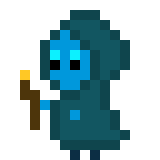

For a while, I’ve had the idea for a my dream video game. Every time I play a game, I think of how some mechanic or other would be cool in my game. I love all kinds of games of different genres but my game, which I’ve currently named Not So Alone, is a top-down farming sim with exploration elements. I take inspiration from games like Minecraft, Stardew Valley, Animal Crossing, and Terarria. To explain the idea to those unfamiliar with these games, in Not So Alone, you play as a druid who has woken up in a strange place with no memories. You work to turn your surroundings into your new home by exploring and gathering resources. Craft, build, and plant crops to expand your home, discover new magic spells, and make some friends along the way.
Not So Alone takes inspiration from a lot of games, so what makes it special? For starters, I wanted it to only be magic and spell based combat. Most games will have you start off with a sword, and have magic be something optional you can start to unlock, but I wanted to skip the sword all together since your character is a druid. You’re only way of defending your self and even gathering resources is by using spells that you can learn and upgrade from the resources in your environment. I wanted to also incorporate a research and discovery mechanic to encourage exploration and experimentation.
The farming mechanic in this game takes a lot of inspiration from traditional farming sims like Stardew Valley. You get seeds, plant them, water your crops, and watch them grow. However I want to make a few tweaks to this for my game, as the progression and time in Not So Alone works differently. For starters there aren’t seasons (spring, summer, fall, winter) like in stardew because I want to encourage a more relaxed gameplay pace, so you don’t have to worry about the passage of time. Another difference is that instead of buying seeds, you have to find them by exploring. I do want to experiment with different mechanics with growing crops, like magic crops, but that’s what I have for now.
There’s a running joke in gaming circles about how it’s not a real game unless it has a fishing mechanic, because a lot of games have fishing mechanics and they are generally well liked. And since it’s based on farming sims like stardew valley, which has a very important fishing mechanic, I also want to include one. Now despite the popularity of fishing mechanics, their implementations vary, and generally garner strong opinions. The stardew valley fishing mini-game is hated by most, even though I personally love it. I’m not sure if I’m going to have a fishing mini-game or just keep it simple with some version of “if the bobber goes down, hit the button to reel it in,” but we’ll see.
One of the biggest mechanics in the game I want to implement is a large world where you explore. The game loop would essentially be, go out into the wilderness, bring back resources of different kinds, use those resources to improve your druid grove, then go back out and eventually unlock more perilous areas. I want a variety of biomes, and I also had the idea of certain dungeons or explorable structures unique to different biomes. From a coding perspective, I was going to have the maps be somewhat procedurally generated but not too much. I might also decide to have set maps that are the same every playthrough, but I haven’t decided yet.
Something unique to Not So Alone compared to games like Stardew and even Minecraft, is that I want only spell based combat. Most games have you use a sword and some may have you unlock magic later, but it’s always basic tool and a sword of some sort. I want to shake it up and have spells be your main way of interacting with the world and with enemies. For example, there will be spells to cut down trees and harvest stone and ore. As for combat spells, I want to do some sort of element system where you can use materials to unlock new spells and experiment with the spells you can cast. I don’t want combat spells to be infinite, so I think I will have a mana bar for them, and potentially a separate mana bar for non-combat spells.
One of my favorite things in video games is when there’s a log or collection of some kind where you fill it up with all of the items you find or craft. I want to implement that and have it be a core mechanic, with discovery of items via exploration being one way of expanding your collection and another via crafting. Alongside normal crafting mechanics, I want to add processing mechanics, where you turn items into new items with machines. I might also add things like rituals or mini-games to create new items from materials.
I love creatures in video games. I love petting my cows and chickens in Stardew valley and I love having pets in minecraft. Something I want to implement is different systems for different types of animals to live in the player’s grove. Certain animals will provide resources, like milking cows or chickens that lay eggs. Some will be pets that help with certain tasks on the farm, like cats who hunt pests. I also want companions who help you fight enemies, and mounts who help you traverse terrain. I love worlds that feel alive and full of creatures so I want to add lots of them.
Not So Alone is one of several projects I have that I work on from time to time. It’s definitely a large one, but I’m in no rush to get it done. I prefer to enjoy the act of working on my projects than to just have them be finished. So it may be a while until Not So Alone is a finished game, but I’m excited to see where it takes me.
For a while, I’ve had the idea for a my dream video game. Every time I play a game, I think of how some mechanic or other would be cool in my game. I love all kinds of games of different genres but my game, which I’ve currently named Not So Alone, is a top-down farming sim with exploration elements. I take inspiration from games like:
Here's some music to listen to while you read.
Not So Alone takes inspiration from a lot of games, so what makes it special? For starters, I wanted it to only be magic and spell based combat. Most games will have you start off with a sword, and have magic be something optional you can start to unlock, but I wanted to skip the sword all together since your character is a druid. You’re only way of defending your self and even gathering resources is by using spells that you can learn and upgrade from the resources in your environment. I wanted to also incorporate a research and discovery mechanic to encourage exploration and experimentation.
The farming mechanic in this game takes a lot of inspiration from traditional farming sims like Stardew Valley. You get seeds, plant them, water your crops, and watch them grow. However I want to make a few tweaks to this for my game, as the progression and time in Not So Alone works differently. For starters there aren’t seasons (spring, summer, fall, winter) like in stardew because I want to encourage a more relaxed gameplay pace, so you don’t have to worry about the passage of time. Another difference is that instead of buying seeds, you have to find them by exploring. I do want to experiment with different mechanics with growing crops, like magic crops, but that’s what I have for now.
There’s a running joke in gaming circles about how it’s not a real game unless it has a fishing mechanic, because a lot of games have fishing mechanics and they are generally well liked. And since it’s based on farming sims like stardew valley, which has a very important fishing mechanic, I also want to include one. Now despite the popularity of fishing mechanics, their implementations vary, and generally garner strong opinions. The stardew valley fishing mini-game is hated by most, even though I personally love it. I’m not sure if I’m going to have a fishing mini-game or just keep it simple with some version of “if the bobber goes down, hit the button to reel it in,” but we’ll see.
One of the biggest mechanics in the game I want to implement is a large world where you explore. The game loop would essentially be, go out into the wilderness, bring back resources of different kinds, use those resources to improve your druid grove, then go back out and eventually unlock more perilous areas. I want a variety of biomes, and I also had the idea of certain dungeons or explorable structures unique to different biomes. From a coding perspective, I was going to have the maps be somewhat procedurally generated but not too much. I might also decide to have set maps that are the same every playthrough, but I haven’t decided yet.
Something unique to Not So Alone compared to games like Stardew and even Minecraft, is that I want only spell based combat. Most games have you use a sword and some may have you unlock magic later, but it’s always basic tool and a sword of some sort. I want to shake it up and have spells be your main way of interacting with the world and with enemies. For example, there will be spells to cut down trees and harvest stone and ore. As for combat spells, I want to do some sort of element system where you can use materials to unlock new spells and experiment with the spells you can cast. I don’t want combat spells to be infinite, so I think I will have a mana bar for them, and potentially a separate mana bar for non-combat spells.
One of my favorite things in video games is when there’s a log or collection of some kind where you fill it up with all of the items you find or craft. I want to implement that and have it be a core mechanic, with discovery of items via exploration being one way of expanding your collection and another via crafting. Alongside normal crafting mechanics, I want to add processing mechanics, where you turn items into new items with machines. I might also add things like rituals or mini-games to create new items from materials.
I love creatures in video games. I love petting my cows and chickens in Stardew valley and I love having pets in minecraft. Something I want to implement is different systems for different types of animals to live in the player’s grove. Certain animals will provide resources, like milking cows or chickens that lay eggs. Some will be pets that help with certain tasks on the farm, like cats who hunt pests. I also want companions who help you fight enemies, and mounts who help you traverse terrain. I love worlds that feel alive and full of creatures so I want to add lots of them.
Not So Alone is one of several projects I have that I work on from time to time.
It’s definitely a large one, but I’m in no rush to get it done.
